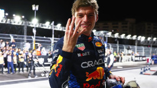

Oi, pessoal! Meu nome é Max Verstappen, e sou piloto de Fórmula 1 pela Red Bull Racing. Desde pequeno, sempre estive apaixonado por velocidade e corridas. meu pai me apresentou ao kart e ali começou tudo. Na F1, meu objetivo é sempre dar o meu máximo em cada volta, lutar pelas vitórias e aprender algo novo em cada corrida. Adoro desafios e acredito que cada treino e cada corrida é uma oportunidade de melhorar. Fora das pistas, gosto de relaxar com amigos e família, mas minha mente está sempre focada na próxima corrida e em superar meus limites.